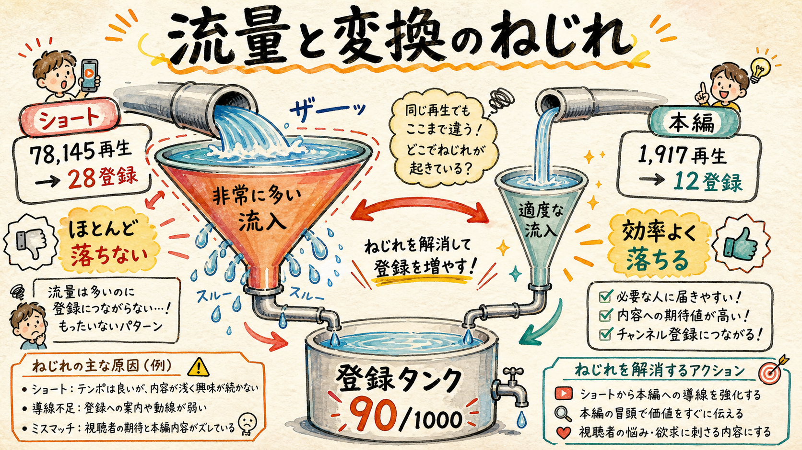
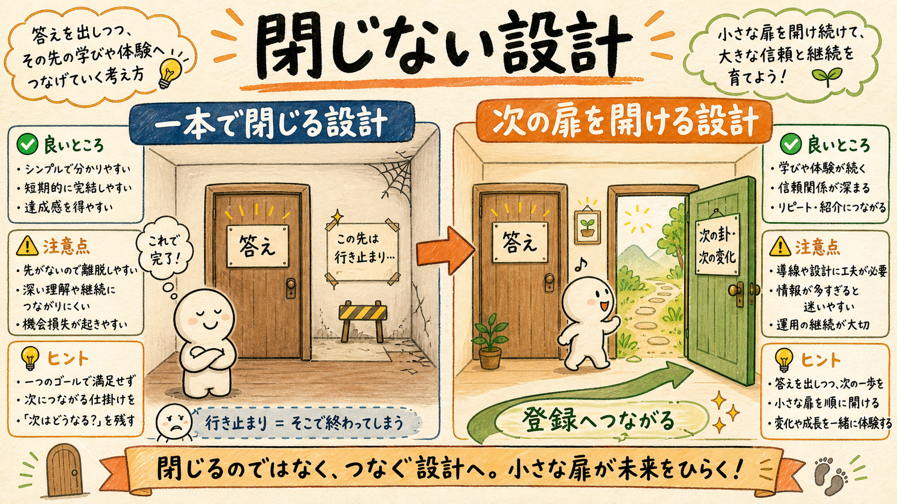
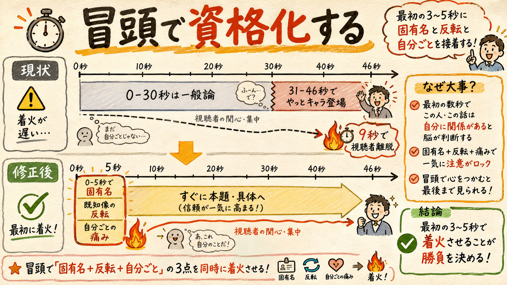
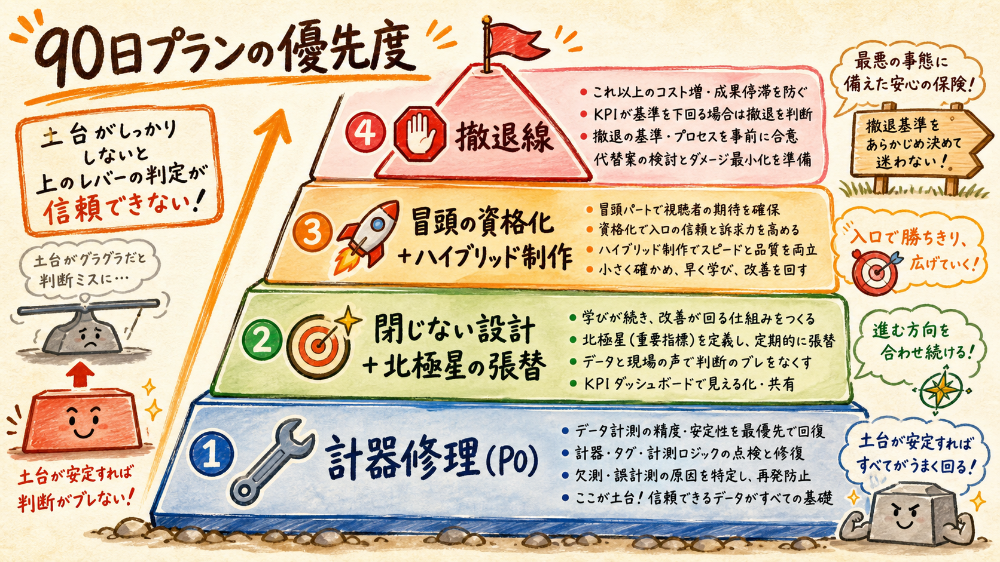

codex専門家4名（ファネル／ショート／コンテンツ／ポジショニング）を並行で走らせ、一次データと実台本から独立に診断させた。結論は一点に収束した。修正の柱は、計器を直す・北極星を張り替える・"閉じない"設計・冒頭の資格化の4つ。
94.5%の流量を持つショートが、ほとんど登録に変わっていない

登録90人・+0.86人/日で、目標1000まで約1,062日（3年）。1年に畳むには2.9倍の加速が要る。制作は42話まで実体があり、制作本数は律速ではない。
| 指標 | 値 | 含意 |
|---|---|---|
| ショート | 78,145再生 / 28登録 = 0.036% | 唯一の大流量だが変換していない |
| 本編 | 1,917再生 / 12登録 = 0.626% | 17倍効率の変換装置だが流量2%未満 |
| 流入構成 | 30日リーチの94.5%がShortsフィード | 勝負はショートで決まる |
| 本編CTR | 中央値約1.1%（33本全て3%未満） | サムネ/タイトルで選ばれていない |
| シェア率 | 0.014% | フィード初速の外へ出ていない |
別々の入口から同じ結論。これが最も強いシグナル

現行台帳のrank1『CTA配線で0.036%→0.1%』は方向は正しいが定義が狭い。真の第一律速は『ショート1,000再生あたりの登録獲得量＝作品として心を動かせているか』。完視聴96-98%の2本でも登録ゼロ、いいね→登録率は本編15.1%・ショート11.9%でほぼ同じ＝心が動いた後の登録率ではなく、心が動く人そのものが少ない。
クリック時の約束との接続が遅すぎる／易経は入口でなくエンジン

| 回 | 作品/キャラが出る時点 | 問題 |
|---|---|---|
| ep38 コードギアス | 約46秒 | SNS批判・会議・ハンコ・日報…何の動画か確信できない |
| ep37 BLEACH | 約37秒 | 最初の30秒は別の一般論 |
| ショート(sh38/40) | 音声で8〜10秒後 | フィード上で一般的な自己啓発動画に見える |
ポジショニング: 実際に刺さっている需要は『易経』ではなく『有名作品から現実の悩みを読み解く大人向けアニメエッセイ』。易経をクリック前の主役にすると入口が狭まる＝エンジンとして裏に置く。CTR約1%の主因は題材でなく『アニメ考察タイトル×和風アート/人生訓サムネ』のミスマッチ。
【第N話・卦】suffixは人間に負荷（「36本見逃した」感・卦名は非易経層に読めない）。ただしH49/H50実験が進行中なのでep64まで割付は変えず結果を待つ。終了後に話数・卦名をタイトル前面から概要欄・プレイリストへ退避する。
0.1%では1年に届かない。最短経路は掛け算
必要ペース = 残910 ÷ 365日 = 2.493人/日（現0.86の2.9倍）。単独シナリオの必要倍率は次の通りで、ショート変換が最小倍率＝第一候補。
| シナリオ | 1年到達の必要水準 | 必要倍率 | 評価 |
|---|---|---|---|
| ①ショート変換のみ | 0.127% | 3.54倍 | 最小倍率＝第一候補 |
| ②ショート流量のみ | 約19万再生/月 | 3.54倍 | バズ依存で不安定 |
| ③本編流量のみ | 約8,863再生/月 | 約8.6倍 | 計器欠・非現実 |
| ④外部チャネルのみ | +49登録/月 | 約224倍 | 単独主戦場にならない |
最短経路＝掛け算。H51推定（いいね率1.0% × いいね→登録11.9% = 登録率0.119%）＋流量+7〜27%。つまり「閉じない設計＋冒頭資格化」で変換を上げ、勝ち型だけ流量を少し増幅するのが数学的に最小の変更。本編CTR・外部チャネル単独では桁が足りない（3%達成でも+0.37人/日）。
優先度順・各項目に判定方法つき
